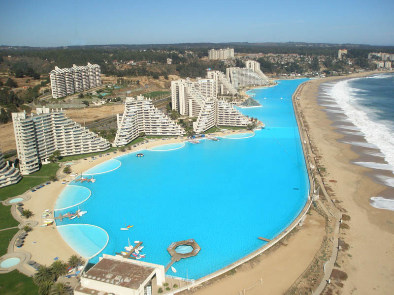
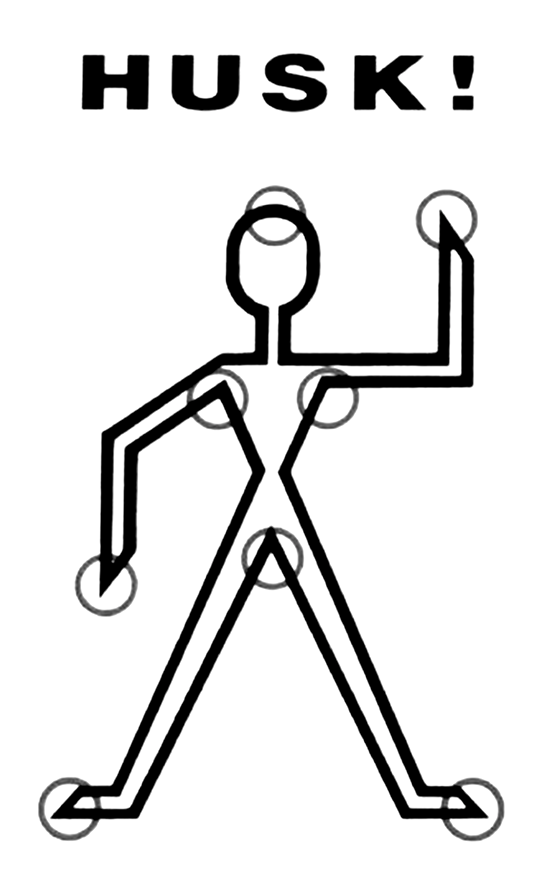
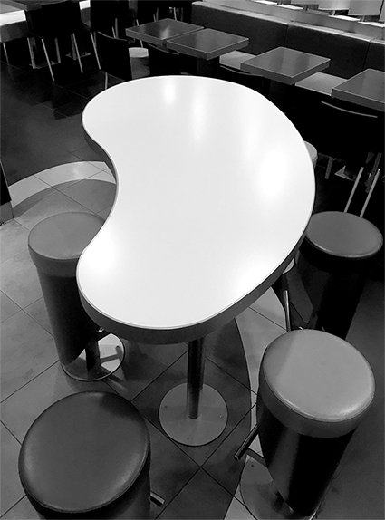

i plunged
in slo-mo
an essay written
in winter last year
Here is a quick index: (so you can have an overview. It's highly recommanded to read the chapters in chronological order though)
- The Attraction
- The Touch with the Hand
- The Splash
- The Boredom / the Erotism
- The Rinse of the Mind and the Skin

When I first saw pictures of Amsterdam,
one striking thing was that water was always
present: I mostly saw photographs of the streets
which would include the bikes and the canals.
Amsterdam has a strong relation to water, as
being part of the Lowcountry of the Netherlands,
sitting below sea level. When I finally settled down
in the city, I could taste this water, I had never seen
so many parks including little swimmable lakes.
People I met here would swim everywhere as the
sun would start shining. It seemed so easy.
Even if the swimming wouldn’t be for a long
time in water due to its coldness, the idea was to
refresh at any possible time. As a retired swimmer,
I was happy to see this enthusiasm for water.
Nevertheless, I’ve always been extremely afraid
of deep water, especially when it refers to natural
water. Which led me to discover intensely the
public swimming pools of Amsterdam, that felt
more familiar and safer.
There are different kinds of pools. Following is a
non-exhaustive list of all sorts of pools I have been
confronted with, from near to far:
Firstly, the public pools, from camping pools to
olympic pools. The ones to swim back and forth,
to exercise and to learn.
Secondly, the private pools, mostly outdoors,
eventually indoors. They appeared with the rise
of the suburban areas: an individual pool for an
individual house. Those pools you directly imagine
by looking through the window of an airplane.
The most known example is the seen-from-above
landscape made out of blue holes in California.
They have different geometric shapes that
I discovered through the catalogue of a swimming
pool store; rectangular, round, bean-shaped,
L-shaped. Their paradisiac names were striking:
- Liberty
- Idyllic
- Diamond
- Haiwai
- Tropic
- Azure
- Cayo Coco
- Full-L
- Escale
- Oasis
- Tahiti
- Odyssey
- Lagoon…
In the same subdivision can be included the
decorative pools: the filled pools in which no one
swims. Usually on a highly luxurious property,
perfect for a wedding setting. Those pools are
pure decoration, it is almost secretely forbidden
to touch them.
Then the empty pools, either in process
of construction, or abandoned.
Familiar as well, the water parks with slides and
artificial waves, mimicking the actual sea at its
best, sometimes called the Splash Fun Water Park,
Fun Splash Water Park, or Splash & Fun Water
Park. Those pools are usually more noisy and have a strong smell of chlorine mixed
with fries.
On a way smaller size and more peaceful
ambiance, let us mention the hot jacuzzi that
bubbles, where everyone seems so complete
sitting inside (eyes closed, pleased smile, bodies
vibrating). Thermal baths are also important to
mention and fit to this category, for the well-being
of its users. Baths, like pools, have existed almost
forever. The Great Bath of Mohenjodaro is called
the earliest public water tank of the ancient world
and was built in the 3rd millennium BC. The
Ancient Greeks appreciated water, but the Romans
adored it. They had different kind of baths, but
also pools for military exercise, for athletic
training, and for nautical games.
There are also the pools on top of another liquid,
when natural water meets another chlorinated
water: the pools in the sea, and the pools on the
boats on the sea. The pools on rivers. Water on
water, but a slightly different liquid. They skim
past each other. Then the pools absolutely over
the ground, from all sizes, mostly in garden:
the inflatable pools, the wooden pools,
the plastic pools and so on.
Different pools for different social contexts, they
are not all accessible. Pools with their codes, how
to behave, how to dress, how to sit, how to swim,
how to lay down around the pool, how to hold
the body, how to show the body.
While opening my TextEdit file and adjusting
it to full screen I realize how it is all white and
rectangular; the light of the library makes my
screen shine. It’s all empty, like a blank page. It
is sharp and rectangular, longer than its wide,
and very, very white. It seems like an empty
swimming pool seen from above, waiting for
the story to be filled in. The following text is a
result of very personal observations, I want to
describe the space of the pool step by step, from
my perspective, as a chronological immersion
in the space of the pool. I actually started with a
sketch and notes: a long stroke slowly exploring
the inside of a rectangle, touching all its edges,
and finally emerging on the outside. However,
the act of writing is freezing the mind, the
feelings, which is a bit of a paradox as the mind
is always in movement, is provisional, in constant
development. So I would call the following
text more that of an attempt, a proposition to
observe, question a space, an object, an attitude,
a commonplace and not to conclude, but
rather to engage.
“How are we to speak of these common things,
how to track them down, how to flush them out,
wrest them from the dross in which they are
mired, how to give them a meaning, a tongue, to
let them, finally, speak of what it is, who we are.”
Perec, Georges. Species of Spaces / Espèces d’espaces, 1974

1. THE ATTRACTION
When we were in the very high Swiss
mountains last September with my class, we had
a view from above onto a little village down hill.
Funnily, the only element from this landscape that
caught my eye was a shiny blue rectangle surface:
a big outdoor olympic pool. Only to glance at this
blue shape excited me. I could already imagine
packing my swimming bag with a still wet towel
that smells a bit of chlorine or finding a piece of
paper that is falling apart in the same bag because
of its humidity. Seeing this pool from above
made me realize how contrasting it was to its
environment. It looked like a bright candy vending
machine in a grey metro station. I found it striking
how it was in total opposition to the landscape:
it was a precisely defined space, dug in the earth
to replace this element with artificial water, with
a color that tries to imitate an idyllic turquoise
sea. For me, this feeling was close to a primitive
attraction. A desire I couldn’t have control on.
“I think of swimming pools as a form of rebellion.
You create an artificial environment and put water
were no water should be.”
Starting writing about swimming pools, I enjoyed
hearing everyone’s pool-stories and personal
references. I realized that everyone managed to
relate easily and enthusiastically to the subject.
At some point, I understood that some people had
a total opposite relationship to pools than mine,
which was something I first could not accept. I had
to face the important truth, swimming pools also
have a strong negative and repulsive connotation.
People hate those places for various reasons,
for example being modest about wearing bathing
suits, or the intimacy it creates with strangers.
Also the fear of the water, seeing the pool as
a deadly place. In a french podcast a swimming
teacher said:
“You learn to swim to be able to survive
or to save. If you can’t breath, you can die
within three minutes. Survival instinct isn’t
enough for someone who can not swim.
Three minutes go fast.”*
If you scream underwater, no one will hear you.
Water is a danger, and it takes some time to trust
this liquid and be confident within it. Let us recall
also that humans are almost one of the only
mammal that can not swim by instinct. Even as
a regular swimmer I sometimes got scared under
water. Specially during winter when it got quickly
dark outside, it felt that the water was also darker.
The further you go, the deeper the swimming pool
became, which made me swim really fast. The
scariest pool was the diving platform pool, which
was four meters deep. After some discussions,
I realized that we could underline in a very binary
perspective two categories of people: the ones
who are definitely more attracted to the swimming
pool for its safe and clear structure, and the ones
who prefer the openness of the sea.
Nevertheless, I discovered more ambiguous
pools: the Leça swimming pools by Alvaro Siza in
Portugal are pools in conciliation with the wilder
surrounding nature. A subtle intervention that
doesn’t contrast with its direct surroundings. The
pool is located at the seaside, including the natural
stones of the sea, as a defined safe extension of
the sea, that avoids any danger of swimming in
the ocean and its wild waves. Siza was concerned
to conserve a large quantity of the existing
rock formations when he planned his modern
interventions into the landscape. The pools he
created reach out into the ocean and easily blend
in with the natural pool formations along the coast
of the Atlantic. Maybe an interesting compromise
for the non pool lovers.
 The swimming pool is commonly seen as a
place of leisure, relaxation, sports, free-time.
Any swimming pool is a place outside daily
constraints. The place where the city-dweller
transforms into the naked athlete or monkey. Even
the idea or representation of a pool is stimulating.
For example, seeing a pool on the flyer of a hotel,
keeps the mysticism of this place, its smell, its
feeling. It is associated to old memories. There are
different kind of smells associated to swimming
pools. The smell of the chlorine, of the bleach can
stir exciting memories. Or while swimming the
smell of someone wearing perfume that would
be a surprising mix with the ambient smell.
The smell of urine close to the children baths.
The smell of the fries, the ketchup, the sausage
close to the snack stand. For me the most exciting
one is the smell when you enter the doors of the public pool, the warmness of the entry hall
mixed with the chlorine. It would announce that
the happy moment would happen in a short time,
no obstacles to it.
The swimming pool is commonly seen as a
place of leisure, relaxation, sports, free-time.
Any swimming pool is a place outside daily
constraints. The place where the city-dweller
transforms into the naked athlete or monkey. Even
the idea or representation of a pool is stimulating.
For example, seeing a pool on the flyer of a hotel,
keeps the mysticism of this place, its smell, its
feeling. It is associated to old memories. There are
different kind of smells associated to swimming
pools. The smell of the chlorine, of the bleach can
stir exciting memories. Or while swimming the
smell of someone wearing perfume that would
be a surprising mix with the ambient smell.
The smell of urine close to the children baths.
The smell of the fries, the ketchup, the sausage
close to the snack stand. For me the most exciting
one is the smell when you enter the doors of the public pool, the warmness of the entry hall
mixed with the chlorine. It would announce that
the happy moment would happen in a short time,
no obstacles to it.
There is a word to name this anticipation in
German, it’s die Vorfreude, which could be
translated by pre-happiness. It is this moment
of projection of the happy moment itself, the
fantasy, the idealization, or more precisely the
big excitement thinking of the upcoming happy
moment. For example, the car ride before reaching
the parking of the amusement park for a long day
of fun. A proverb says that the greatest pleasure
lies in die Vorfeude. Maybe the idea of the pool
itself, the associated souvenirs are more pleasant
than the moment itself. Just the view on it, the
smell of it, the memories, feed the mystery.
 San Alfonso del Mar is a private resort in Algarrobo, Chile, and is one of the world’s
largest swimming pools (1013 m long)
San Alfonso del Mar is a private resort in Algarrobo, Chile, and is one of the world’s
largest swimming pools (1013 m long)
2. THE TOUCH WITH THE HAND
“In the exhibition halls, the car on show is
explored with an intense, amorous studiousness:
it is the great tactile phase of discovery,
the moment when visual wonder is about to
receive the reasoned assault of touch (for touch
is the most demystifying of all senses, unlike sight,
which is the most magical).”
In this quote, Roland Barthes is describing
the magical function of the sense of sight when
seeing the New Citroen. How it is visited through
the eye with an immense intensity. For the
author, the sense of touch is one of the most
demystifying, it is the moment of destruction
of the magical distance that feeds the mystery,
thus the fantasy.
The view on a pool can be attractive. I’ve noticed
that the first thing people do when they finally
arrive to the pool is to taste (to touch) the water
with their hand. That’s what human also do when
they see appealing fountains when they travel.
It is this special gesture to estimate the warmness
of the water. It is also a way to get the neck
wet before entering the water and so to avoid
thermal shock. There is a certain need from it to
be touched, to be grasped. Isn’t it the moment
of disappointment? The warm idea of the pool,
the sense of sight, sometimes turns out to be
extremely cold and distancing at this precise point,
when the sense of touch occurs. The mysticism,the fantasy disappear. The expected feeling of
grasping the water is not reached, water is not
touchable, it dissolves quickly between the fingers,
which maybe is also the reason why it is so
appealing. It is an impossible material. We use
our hands to confirm an impression we have
about a certain materiality. This extreme need
to touch comes from a difficulty to understand
a material. We touch the water also because we
want to touch what pleases the eye. Touching,
it is getting closer to it.
I’ve been thinking a lot about the materiality of
water, wondering why it looks so attractive. I am
not specially attracted to any other kind of water,
when I wash hands or take a shower. But seeing
it moving slowly in this shiny blue rectangle,
becomes strongly mesmerizing. My eyes are
hypnotized while my fingers instinctively want
to have a privileged contact with it. It is the same
captivation as when I watch slime videos on
my Instagram feed.
“Watching someone else ply and poke and
squish slime together is calming. It’s easy,
as the repetition washes over you, to lose track
of yourself and your worries; the video becomes
a momentary escape from quickly moving,
anxiety-inducing social-media feeds. (…) they
allow a brief suspension of the self, in an
environment founded entirely on the self’s
constant construction and reconstruction.”*
The manipulation of slimy materials has a big
success on Youtube and Instagram: videos of
slime, of hands touching ambiguous materials
have been more and more shared and viewed.
Those videos of colorful, beautiful shiny, glossy,
fluffy, materials have a very hypnotizing power
that bring you into some sort of meditative state.
The actions are simple, they mimic primal organic
desires, always executed with the help of hands
that have this important role of activating the
material. For example, a recent trend is videos
where two fingers hold a needle that slowly goes
through a balloon filled with shaving foam, so
that the foam splashes beautifully, like the act of
exploding a white pimple on your face. Or videos
of honey being spread on a surface, which looks
like fecal matter. It seems like those videos are
unconsciously repeating those body actions, but
in a smoother way, for an optimal visual pleasure.
 The attraction is even bigger, because those
videos are watched through the screen of a
smartphone: the thumb is just caressing the
screen to choose the video to watch, and the eye
can enjoy this satisfying video, without getting
dirty with its hands, not having to clean the
stage of the action. It is only the pure positive
aspect of it. Yet meanwhile, some frustration is
created by not feeling it directly, thus fantasizing
the feeling of this material, which is one of the
greatest pleasure. I see the water in the space of
the swimming pool as this appealing, calming
material, calling to be grasped.
The attraction is even bigger, because those
videos are watched through the screen of a
smartphone: the thumb is just caressing the
screen to choose the video to watch, and the eye
can enjoy this satisfying video, without getting
dirty with its hands, not having to clean the
stage of the action. It is only the pure positive
aspect of it. Yet meanwhile, some frustration is
created by not feeling it directly, thus fantasizing
the feeling of this material, which is one of the
greatest pleasure. I see the water in the space of
the swimming pool as this appealing, calming
material, calling to be grasped.
“In the swimming pool pictures, I had become
interested in the more general problem of painting
the water, finding a way to do it. It is an interesting
formal problem, really apart from its subject
matter; it is a formal problem to represent
water, to describe water, because it can be
anything — it can be any color, it’s movable,
it has no set visual description.”
In this quote David Hockney, one of the major
swimming pool painter, is confirming this idea
of the difficulty of this material, here in terms
of its representation, of how to paint water.
Liquids don’t keep any shape for long, liquids are
constantly moving, which creates this frustration
of wanting to touch it, to appropriate it. Building
a pool is a way to solidify this liquid, that usually
is so unreachable: now, it is placed in the closed
rectangle of the pool, the uncontrollable is finally
under control, in a clear spatial dimension.
The water is ready to be touched, the water
is ready to be appropriated.
3. THE SPLASH
After the touch of the hand in the water
comes the time of the splash, the jump. The whole
body is then involved.
“One by one, spaced by the beat of hearts,
they reach the tongue of the board at the top.
And once on the board, they pause, each exactly
the same tiny heartbeat pause. And their legs
take them to the end, where they all give the
same sort of stomping hop, arms curving out as
if to describe something circular, total; they come
down heavy on the edge of the board and make
it throw them up and out. It’s a swooping machine,
lines of stuttered movement in a sweet late bleach
mist. You can watch from the deck as they hit
the cold blue sheet of the tank. Each fall makes a
white that plumes and falls into itself and spreads
and fizzes. Then blue clean comes up in the middle
of the white and spreads like pudding, making
it all new. The tank heals itself.”
The jump is the most frontal way of going from
the world above the waterline to the world below.
It is so frontal because of the speed of going into
this other dimension, and because the entire body
is confronted with this other material, the water.
Taking a deep breath, and then letting your body
access another state. All the physical senses are
now disturbed. Going to the world below means
accepting a kind of deafness, slow movements,
blurry vision, different breath.

I see the jump as the moment of the swim that
creates the most excitement, stimuli. It is the
moment of relief for reaching this other state.
I see the jump as the moment of pure pleasure
that provokes efficient, direct, immediate
excitement. The kind of excitement, that because
of its immediate effect, can have negative
connotations. It is usually seen as a sign of
ignorance, weakness, a lack of distance. But it
would be lying to pretend never to be sensitive
to a form of immediate pleasure. I see the jump as
this immediate pleasure, probably easy to reach,
but at least it provokes emotions, reactions.
I see the jump in the water as similar to crossing
the gates of an amusement park. It is as frontal as
jumping in the water, because of all the sudden
artifices within the landscape. Stefan Zweig
describes the entry in the Prater in Vienna as a
moment of loss of any optic and moral senses.
Notions of time disappear. Some people start
running, suddenly some parts of education
dissolve to let the primitive side take place.
The jump is the head-on moment of escaping the
world above the waterline. The term of escape is
in my sense one of the most significant in relation
to the act of jumping, as entering in this state, the
liquid, is entering in a total opposite state from our
daily life, a temporary distraction from reality. It
is clearly expressed in the text The Swimmer by
John Cheever. The short story depicts the journey
of the main character Neddy, through the pools of
the neighborhood, in which he swims to reach his
home. The pools represent periods of time that Neddy crosses, but he is trying to escape the truth
of his life, ignoring the time passing, denying it
by jumping and swimming from pool to pool:
“His life was not confining and the delight
he took in this observation could not be explained
by its suggestion of escape. (…) As he was
pulling himself out of the water he heard
Mrs. Halloran say,
‘We’ve been terribly sorry to hear about all your
misfortunes, Neddy.’
‘My misfortunes?’ Ned asked.
‘I don’t know what you mean.’
‘Why, we heard that you’d sold the house and that
your poor children…’
‘I don’t recall having sold the house,’ Ned said,
‘and the girls are at home.’
‘Yes,’ Mrs. Halloran sighed. ‘Yes…’
Her voice filled the air with an unseasonable
melancholy and Ned spoke briskly.
‘Thank you for the swim.’
‘Well, have a nice trip,’ said Mrs. Halloran. (…)
Was he losing his memory, had his gift for
concealing painful facts let him forget that he had
sold his house, that his children were in trouble,
and that his friend had been ill? His eyes slipped
from Eric’s face to his abdomen, where he saw
three pale, sutured scars, two of them at least a
foot long. Gone was his navel, and what, Neddy
thought, would the roving hand, bedchecking
one’s gifts at 3 a.m., make of a belly with no navel,
no link to birth, this breach in the succession?”
4. THE BOREDOM / THE EROTISM
At first, I thought first that pools
were designed for fun, that they exist just for
immediacy, for a consumption of pleasure, that
doesn’t leave a lot for the imagination, which
was partly wrong. Nothing is particularly dictated
when you enter the pool. There is a lot of options,
so you better have an idea what to do within this
space. Unlike the rollercoaster, in which you go in,
sit down, and the fun comes to you in which you
don’t have to search for it or to think.
What do I do when I swim? I breathe and I
observe. My breath suddenly becomes something
I have to consider and which gives rhythm to
my movements. If nothing arrests my gaze I will
just start counting my strokes in my head, but
usually something would interrupt the counting.
I remember this loneliness I felt during my
swimming classes as a kid. When you are
swimming, you are totally alone, you can not
really hear when the teacher calls you. It’s a big
introspective moment. I remember the high ceiling
that kept moving forward when I was swimming
on my back, sometimes I got so hypnotized that I
lost track. And back with the head under water you
notice all the little things. A broken tile, a floating
plaster. Those details become the main characters
of your swim, you need to shift your angle of
vision and consider the things as they are and give
them a new meaning, a story to be written. Even
though you are working out, getting exhausted,doing this tedious movements, the exercise has
slowing down properties. The sweat as a physical
sign of working out disappears in the water.
Being active but meditative. A bit like cycling in
Amsterdam. You can not do anything else, like
using your phone, interacting, answer those
messages that you postpone answering. You can
not even write down your thoughts. It is a strong
moment of you with yourself. Nothing can distract
you from being only with your own thoughts. It is
like a beautiful emptiness, that needs some time
to be reached, that is not immediate.
I would like to see other kinds of pools exist,
in which we could easily swim eyes closed,
not seeing anything, but just feeling our body
with the water, following a safe endless path.
At some point the sense of sight is disturbing
the thoughts and puts itself as the main focus.
It seems that the only thing you can do while
swimming is watching what is happening under
water. Apart from the little details floating, an
important part of the swim is the other swimmers.
Water accelerates excitement (émoi in french),
gives the envy to synchronize your body with
another one, to dare to touch, chose your water
line, analyze who is swimming back and forth. You
have time to think, to imagine and to fantasize.
You see everyone almost naked, glossy, soaked.
The swimming suit is a second skin that doesn’t
cover so much. You can’t hide, you are here in
one of your most natural state. Head under water,
you only see bodies and bodies, almost no heads
visible, only arms, legs, open arms, open legs. You
identify people from their bodies, a tattoo, a scar…
Only when you reach the wall and stop for a bit,
you can put a face on the watched body. Head
under water, bodies move slowly, the slow-motion
effect adds a cinematographic and sensual layer
to the action.
The pool is an ambiguous space, sensual in
its observation, but anti sensual in its action.
Even before being in the water is the dressing
and undressing in the cabin, hearing someone
in the next cabin doing the same. The pool
is also the place for perverts to watch, suddenly
everyone looks into each others eyes when
you reach the wall.
It is a bit the same erotic tension as in the subway,
everyone is watched, you watch everyone. It’s
deeply looking at people in every detail, it is really
intimate and intrusive, but in the same time there
is nothing else to do. Most of the time, when you
go out of the train at your stop, you forget about
it. It has its importance mostly during the moment
itself. When you leave the pool, you immediately
forget about the bodies you have watched and
the stories you have built around. There should be
a name for those places that possess such a close
and closed structure, where you are stuck with
strangers, and looking at each other is the only
action offered, like in pools, trains, elevators.
Of course not everyone experiences it in this way,
but pools are often represented with such erotic
connotation. It can be seen a lot in the cinema,
a lot of movies take place around a swimming
pool, where the sexual tension plays an important role of the setting. For example the movie
Deep End plays with the heavy misty, warm
and yet illicit ambiance of the public pool, as a
place for seduction. Mike, a young boy, quitted
high school and found a job in a grimy yet elegant
public bath. In the beginning of the movie he gets
harassed by an older women, that just got out of
the pool, half naked, and apparently very desiring.
The public bath is used as a strong image
of the place of the discovery of sexuality.
The reason why it is so strongly erotic is also
because most of the people don’t go to the pool
for this aim in the first place. The swimming pool
is initially not meant for that. This creates a secret
envy, that not a lot of people would admit. The
fantasy has something beautiful which is that
it will remain a fantasy.
“Is not the most erotic portion of a body where
the garment gapes? (…) the intermittence of skin
flashing between two articles of clothing (trousers
and sweater), between two edges (the opennecked
shirt, the glove and the sleeve); it is this
flash itself which seduces, or rather: the staging
of an appearance-as-disappearance. The pleasure
of the text is not the pleasure of the corporeal
striptease or of narrative suspense. In these cases,
there is no tear, no edges: a gradual unveiling:
the entire excitation takes refuge in the hope
of seeing the sexual organ (schoolboy’s dream)
or in knowing the end of the story
(novelistic satisfaction).”
For Roland Barthes, veiling (the garment) is an
essential part of eroticism. He is describing the
erotic portion of the object of the text, but this is
also relatable to a body, swimming back and forth.
A staging of an appearance-as-disappearing.
A friend of mine mentioned a swimming pool in
Amsterdam that has a special schedule for people
to swim completely naked. It first sounded very
exciting for this feeling of complete body freedom,
that we maybe once experienced by swimming
naked in the ocean. However, the only time she
went the pool was filled with men, and she felt
very uncomfortable. Instead it had a feeling
of repulsive voyeurism.
“Pornography avoids detour. It gets straight
down to business. Erotic, by contrast, are
signs which circulate without disclosing
themselves. Pornographic theatre is
the theatre of disclosure.”
The veil within the pool consists for me of two
elements: the bodysuit of the swimmer and the
material of the water that covers the bodies. The
veil is the reason why the erotic tension is not
literal, nor clear or admitted. The water changes
the color, the texture, the view on the skin, like a
filter. The water smoothes the view on the skin.
The only beautiful moment is under water, as
for when you leave the pool it disappears.
I don’t really like the world filter. Filters to make
something more beautiful, to embellish for a
provisory moment. I wonder to what extent we could say that today’s veil is the filter. It is
more and more permanent, we are surrounded
by filters, in advertising obviously, but also in
our daily interactions, on the pictures in our
smartphones. Instagram, Snapchat, even the
karaoke application called Mule uses filters to
embellish the voices. Is the filter through the prism
of the phone not anti-erotic though?
5. THE RINSE OF THE MIND AND THE SKIN
After a swim comes the time of rinsing,
which consists of cleaning yourself from
the chlorinated artificial water with pure water,
it is the highest moment of feeling clean. Even
though being inside the water would already
suggest this feeling.

Water of the swimming pool doesn’t usually
appear to be the cleanest, it is associated to lice,
mycosis, verruca… specially in public pools. I write
this from a French perspective, that is probably
different from a Scandinavian one for example.
A Danish friend explained me how educated
they became as kids when they had to take the
shower before the swim, all naked. She said that
the teachers were intransigent about the cleaning,
every body part had to be free from dirt before
sharing all together the same water. In France,
it is only kindly reminded you should keep your
bathing suit on during the shower.
“A little water clears us of this deed.”
This is what Lady Macbeth claims after persuading
her husband to kill Duncan. She is helping to
wash Macbeth’s hands of the blood with the water
of the fountain. The water here has the role of
cleaning the guilt, cleaning the conscious after the
crime. The water of the pool has more of a mental
cleaning role, and the final shower has to clean
the last layer of the body, on the surface: the skin.
I see the shower as this moment of perspective
on the swim, this step back. It is also the moment
of reconnection with the common world. We are
used to shower everyday, so stepping out of the
deep blue rectangle and directly taking a shower
is stepping back to a familiar gesture.
I like to associate the water of the pool with a
sort of therapeutic benefit, a sort of long brain
massage that would order your mind. Water,
having this power that purifies the inner being,
of course associated with the legend of the
Fountain of Youth. It stands as a symbol for
renewal, as the fountain brings back the youth
of anyone who drinks or bathes in its waters.
Water as a hope for cure.
I see the shower as the moment of having distance
and getting perspective on all the thoughts that
got mixed underwater. It is a step back. Lately,
I’ve been dreaming about pools a lot. Pools with
complex shapes, a pool maze, where the water
only goes until the breast that would suggest a
safe place. I checked online what my dream
was trying to tell me: To dream that you are
swimming suggests that you are exploring
aspects of your subconscious mind and emotions.
The dream may be a sign that you are seeking
some sort of emotional support. It is a common
dream image for people going through therapy.
Swimming as a therapeutic exploration, to clean
your mind, as this big introspective moment.
Maybe the swim gives perspective on your mind as it is appealing to all the senses but in a
very different way as usual.
I was listening to a french podcast called
“D’où viennent les idées” (where do ideas
come from), questioning where the essence
of ideas originate. A science teacher and a
philosophy teacher both emphasize and underline
the fact, that we find our response when we
let go, when we stop thinking. They justify this
by quoting Nietzsche who said:
“We need to remember and to forget, we need
the day and the night, we need a permanent effort
that characterize the intellect, and one moment
when we accept to abandon ourselves.”
The permanent effort creates obstacles. Accepting
to abandon ourselves, not in terms of giving up,
but more as accepting to slacken the thoughts,
in another time structure than the actual one.
As an example, we can relate to Archimede (third
century B.C.) who shouted “Eureka!” (I have
found it) when he found the answer of the formula
needed to measure the volume of King Hieron II’s
crown, jumping naked from a public bath. He had
discovered the answer in his bath by noticing that
the water level rose when he entered it. I am not
sure I believe in the whole Eureka concept, that
ideas suddenly emerge, like genius appearances.
Taking this bath, being present in this common
action, gave Archimede perspective and distancetowards his initial question that comes from a
different working context. I believe that getting
perspective on things come with the help
of different time and space frames.

Pool shaped table at Macdonald’s
Following the different steps of my
observations and researches, I realized that
the subject of the pool was finally obvious for
me with this idea of immersion, of plunge, of
obsession towards one subject. This is how I try
to understand a content, to dig into it, to detect
my own perception on it, to understand where
my intuitive attraction comes from.
I’ve been looking at the pool through five
chronological steps: the attraction to the pool (1),
the taste of the water with the hand (2),
the immediate splash (3), the boredom under
water (4) and the final rinse (5); that all engage
different feelings. The fantasy, the deception,
the over-excitement, the exhaustion, the reflection,
the distance. A series of feeling that finally
sound so familiar.
What is it to question an automatic gesture,
what I considered obvious, the habitual. To write
to let those thoughts survive and to give them
a structure, to solidify them in a way, in this
rectangular frame of the page. Now I leave the
pool, till next time, the air outside seems fresher
than before, and I will smell like chlorine during
the rest of the day.
letsgo bbaacckk ttooo tthhee tooOOoop